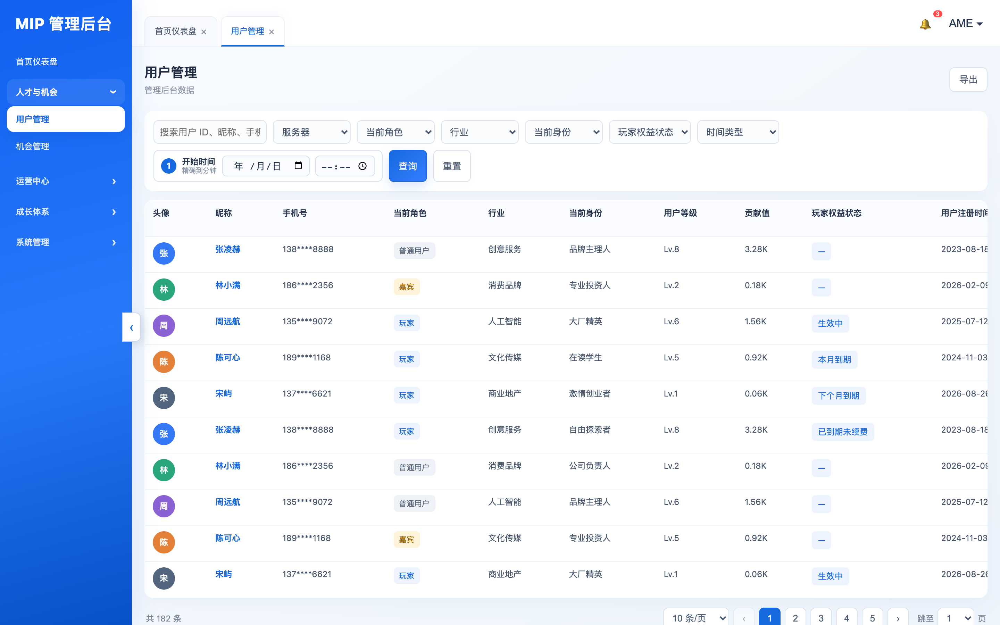
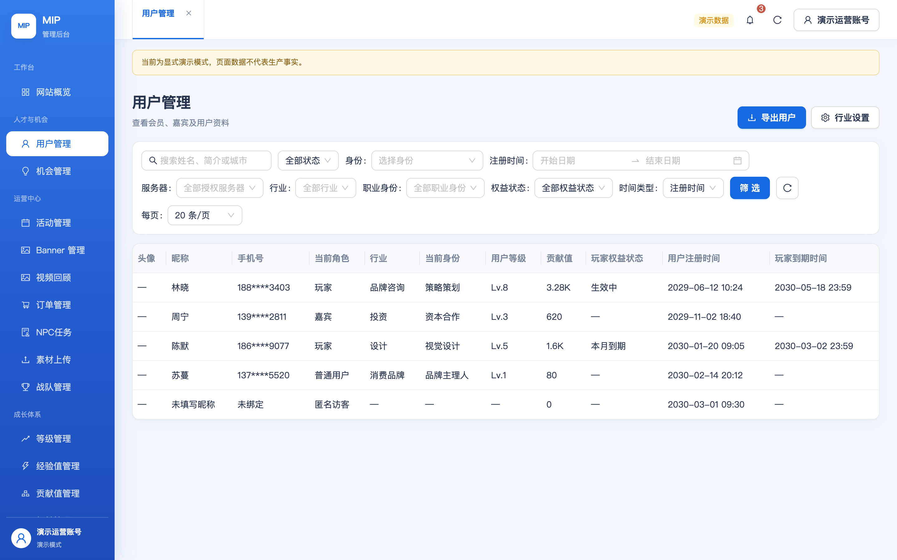
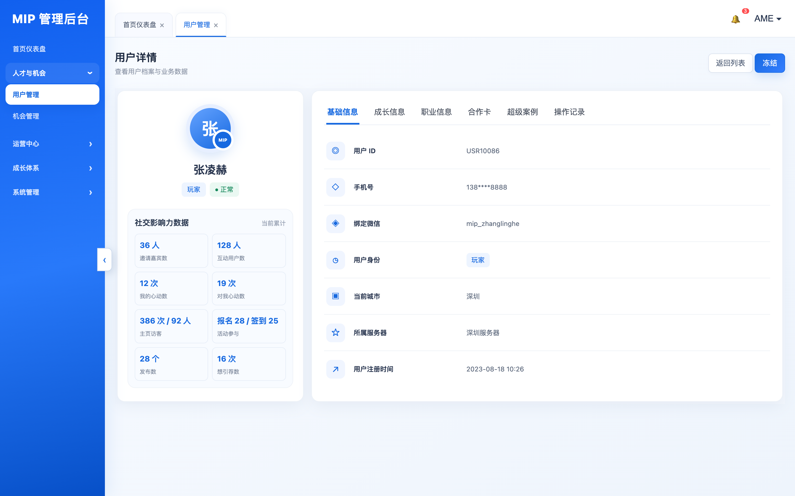
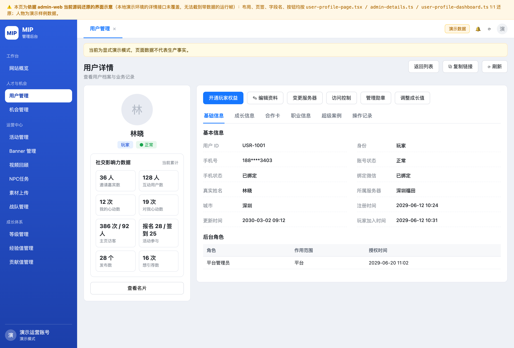
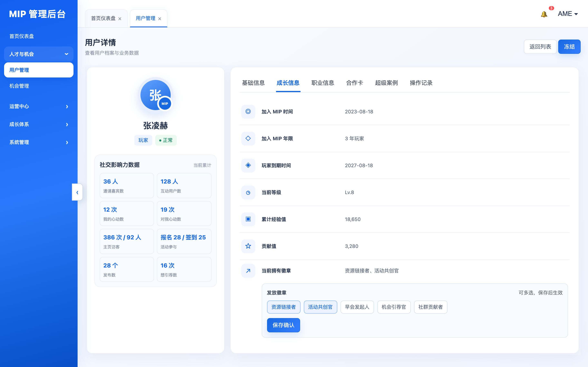
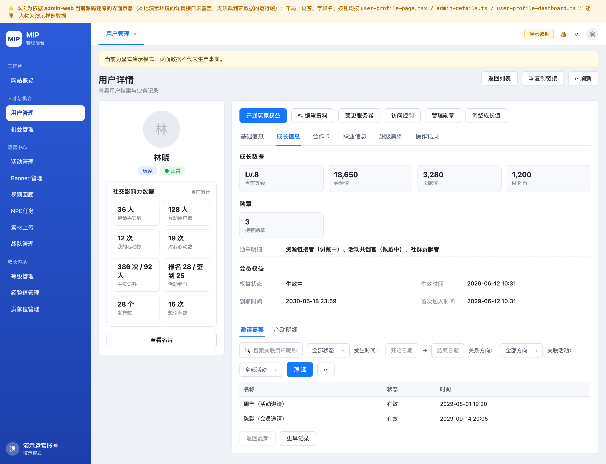
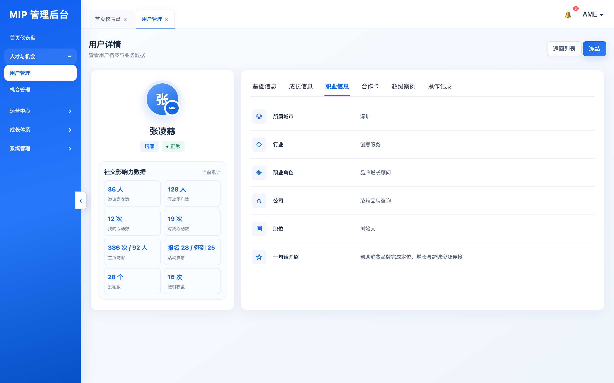
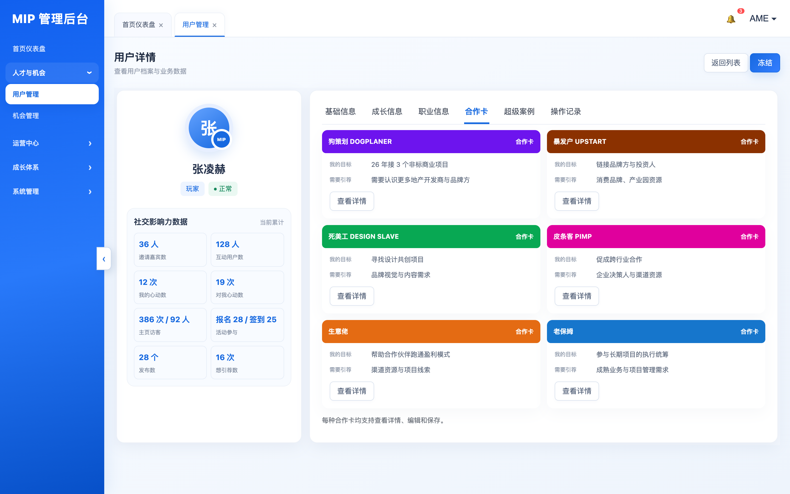
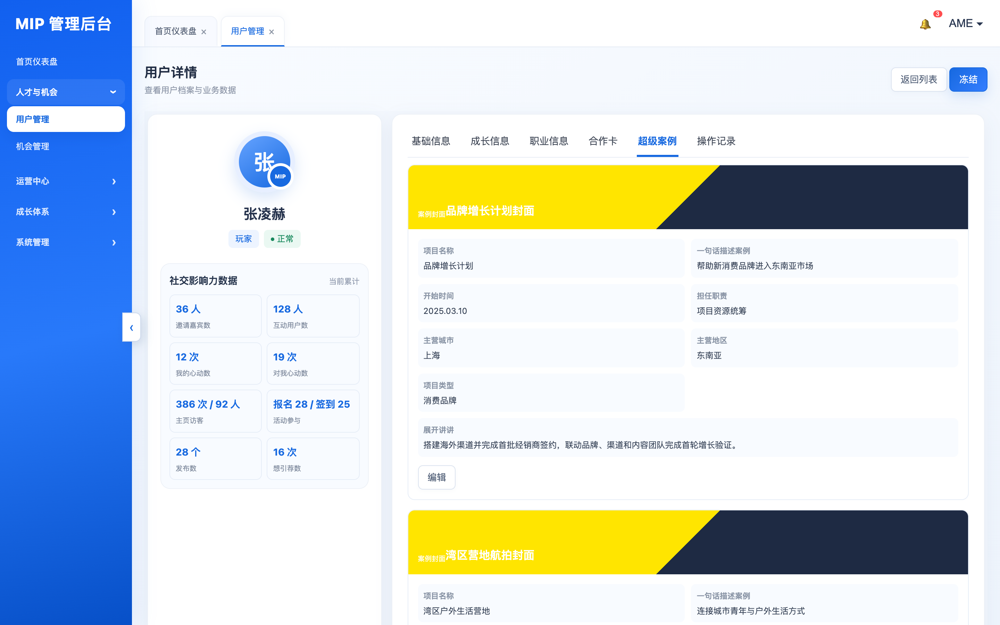
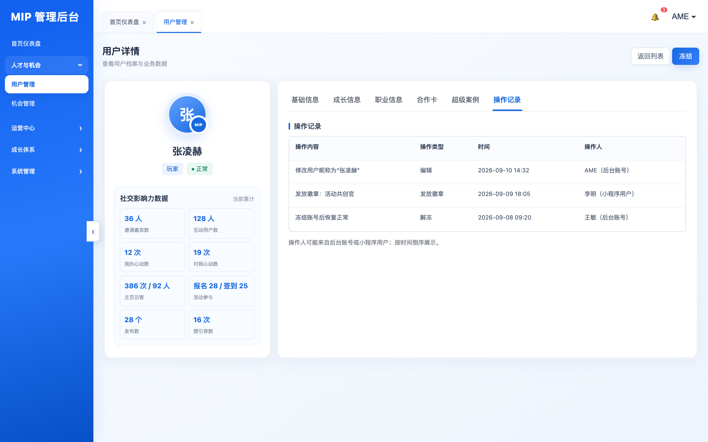

用户管理是 admin-web 落地完成度最高的模块之一：原型与 PRD 的核心要求基本全部落地——列表 11 列、七类筛选、玩家权益四档状态、详情页「左看板 + 六页签」结构、社交影响力 8 项指标、合作卡 6 种固定卡型、勋章发放、冻结/解冻、操作记录等均已实现，且整体为超集（敏感导出工单、访问名单、变更服务器、开通权益、成长值冲正等增强）。
主要缺口集中在 4 处功能缺失/差异（列表当前城市标签、「加入 MIP 年限」、分页跳转与每页 100 条、搜索范围）和一批术语与口径待确认（徽章/勋章、贡献值 K 格式、影响力空数据规则等），详见文末清单。
左列 = MIpDev 原型 HTML 运行截图；右列 = 当前 admin-web 画面。点击图片可放大。
user-profile-page.tsx / admin-details.ts / user-profile-dashboard.ts 1:1 还原布局、字段名与按钮（画面顶部有醒目黄条标识），人物为演示样例数据，不代表运行截图。









对比范围：筛选器、表格列、行内格式、页头操作、分页交互。
| 功能点 | 原型 / PRD 要求 | 当前实现 | 结论 |
|---|---|---|---|
| 关键词搜索 | 占位文案「搜索用户 ID、昵称、手机号或档案关键词」，支持按档案关键词模糊搜PRD §2 用户列表规则 | 占位「搜索姓名、简介或城市」；服务端仅模糊匹配 昵称 / 简介 / 城市，不支持按用户 ID、手机号搜索 | ⚠️ 差异手机号搜索涉敏感信息，是否刻意收敛 → 待确认 |
| 服务器筛选 | 全部｜深圳｜北京｜上海；默认展示所属服务器数据，跨服务器需数据权限 | 远程授权服务器目录（branches.list purpose=USER_FILTER），数据范围按 capability + BRANCH/PLATFORM 收敛 |
✅ 一致 |
| 当前角色 | 全部｜普通用户｜嘉宾｜玩家 | 玩家｜嘉宾｜普通用户｜匿名访客（可清除） | ✅ 一致多「匿名访客」为扩展 |
| 行业筛选 | 固定枚举：创意服务｜消费品牌｜人工智能｜文化传媒｜商业地产 | 动态字典（mip_tags kind=INDUSTRY），并提供「行业设置」维护页 |
✅ 一致静态枚举演进为可配置 |
| 当前身份筛选 | 固定 7 项：品牌主理人｜专业投资人｜大厂精英｜在读学生｜激情创业者｜自由探索者｜公司负责人 | 界面命名「职业身份」，选项动态取自档案 identity_status 去重值 |
⚠️ 差异命名与枚举来源不同，实际字典值待核对 |
| 玩家权益状态 | 生效中｜本月到期｜下个月到期｜已到期未续费；非玩家展示「—」 | 四档文案完全一致（ACTIVE / EXPIRING_THIS_MONTH / NEXT_MONTH / EXPIRED），按到期日 30 日窗口 + 下个自然月自动分档；非玩家「—」；兼容旧枚举 CURRENT/FORMER/NEVER | ✅ 一致 |
| 时间类型 + 时间范围 | 先选类型（用户注册时间｜玩家到期时间），再填日期和时刻；复用机会管理自定义组件，不混用两类时间 | 「注册时间｜会籍到期时间」二选一 + 分钟精度北京时间 RangePicker，切换类型自动清空 | ✅ 一致文案「会籍到期时间」vs「玩家到期时间」细微 |
| 账号状态筛选 | 未定义列表状态筛选 | 启用｜已限制｜已关闭 | 🔵 扩展 |
| 表格列（11 列） | 头像、昵称、手机号、当前角色、行业、当前身份、用户等级、贡献值、玩家权益状态、用户注册时间、玩家到期时间 | 11 列名称完全一致（admin-read-pages.ts 列定义逐字对齐） | ✅ 一致 |
| 手机号展示 | 需脱敏展示 | xxx****xxxx 脱敏；无 users.phone.read 权限时降级显示「已绑定 / 未绑定」 |
✅ 一致权限降级为增强 |
| 用户等级格式 | 仅展示 Lv. 级别数字，如「Lv.8」 | 服务端下发 levelName（Lv.x）原样展示 |
✅ 一致 |
| 贡献值格式 | 以 K 为单位，如「3.28K」 | 千分位数字格式，如「3,280」（toLocaleString） |
⚠️ 差异 |
| 当前城市标签 | PRD 要求列表展示当前城市标签，且城市与服务器是两个独立字段 | 列表无城市列/标签（城市仅出现在搜索匹配与导出列中） | ❌ 缺失 |
| 原型残留「账号状态」列 | 原型 JS 残留 v0.5 的账号状态列渲染；v1 PRD 已把它移到详情左侧看板 | 列表无账号状态列（账号状态在详情页展示） | ✅ 符合 v1 |
| 导出 | 支持导出当前筛选结果（原型点击后变「已导出当前筛选结果」） | 「导出用户」走敏感数据导出工单：创建→就绪→预留→下载（SHA-256 + ZIP 头校验）→消费，≤10MB；「包含手机号」需 users.phone.read |
✅ 一致实现为安全增强 |
| 创建用户入口 | 原型用户列表无「创建」按钮；v1 PRD 已删除 v0.5 的「添加用户」整节 | 无新建用户入口 | ✅ 一致 |
| 批量操作 | 全文未定义 | 无 | ✅ 一致 |
| 分页交互 | 全局分页组件：10/20/50/100 条每页 + 「跳至 X 页」页码跳转 | 游标式分页：上一页 / 第 N 页 / 下一页，无页码跳转；UI 提供 100 条/页但服务端上限 50，选 100 实际返回 ≤50 | ⚠️ 差异100 条配置不一致属缺陷 |
| 排序 | 未定义 | 固定 updated_at DESC, id DESC |
✅ 不冲突 |
PRD「用户档案左侧-数据看板」+ 原型用户详情（张凌赫示例）逐项对比。
| 功能点 | 原型 / PRD 要求 | 当前实现 | 结论 |
|---|---|---|---|
| 整体布局 | 左侧数据看板（头像/昵称/身份/账号状态 + 社交影响力数据）＋ 右侧详情页签区 | 同构：左侧栏 + 右侧六页签 | ✅ 一致 |
| 头像 / 昵称兜底 | 无头像展示默认头像；无昵称展示「未设置昵称」 | 默认头像；昵称兜底「未设置昵称」 | ✅ 一致 |
| 身份 + 账号状态标签 | 身份：普通用户/嘉宾/玩家；账号状态枚举「正常、已冻结」（正常绿标签、冻结红标签） | 同枚举，另支持「已注销」第三态 | ✅ 一致已注销为扩展 |
| 社交影响力 8 项指标 | ① 邀请嘉宾数（人）② 互动用户数（人）③ 我的心动数（次）④ 对我心动数（次）⑤ 主页访客「X 次 / Y 人」⑥ 活动参与「报名 N / 签到 M」⑦ 发布数（个）⑧ 想引荐数（次）；右上角固定「当前累计」；按用户维度累计不限时间 | 8 项名称、单位、复合格式逐字一致（含「当前累计」标识）；每项带口径 Tooltip；数据由云函数按 邀请归因/心动/访客/引荐意图等 8 类表聚合 | ✅ 一致 |
| 空数据 / 失败规则 | 无数据显示 0 并保留单位；加载失败显示「—」，不以 0 替代 | 缺失与失败一律显示「—」（保守策略，不区分「确认为 0」） | ⚠️ 差异 |
| 冻结 / 解冻 | 原型标题栏有「冻结」一键按钮（无解冻、无原因）；PRD 未定义入口，仅在账号状态枚举与操作类型示例中出现 | 「冻结用户 / 解冻用户」按状态切换；由服务端下发 permissions.freeze / unfreeze 控权；走「设置用户访问名单」弹窗，操作原因必填（ALLOWLIST/BLOCKLIST 机制）；禁止冻结自己 |
✅ 覆盖且更完整快捷冻结按钮预传 reason 为空、依赖弹窗补填，交互多一步 |
| 返回列表 | 有 | 有 | ✅ 一致 |
| 其他页头操作 | 无 | 复制档案链接、刷新、查看名片（跳名片库）、开通玩家权益、编辑资料、变更服务器、访问控制、管理勋章、调整成长值 | 🔵 扩展 |
| 页签结构 | 6 个：基础信息 / 成长信息 / 职业信息 / 合作卡 / 超级案例 / 操作记录 | 6 个页签名称完全一致；另保留旧 Tab 键兼容映射（content/invitations/hearts/history/logs） | ✅ 一致 |
| 页签 · 功能点 | 原型 / PRD 要求 | 当前实现 | 结论 |
|---|---|---|---|
| 基础信息 · 字段 | PRD：用户 ID、手机号（脱敏）、绑定微信、用户身份、所属服务器、用户注册时间（精确到分）、玩家加入时间 | PRD 7 字段全部实现；另扩展：账号状态、手机状态、真实姓名、城市、更新时间、「后台角色」子区（角色/作用范围/授权时间） | ✅ 超集 |
| 成长信息 · 成长数据 | 当前等级、累计经验值、贡献值；「加入 MIP 年限」按首次加入时间计算；玩家到期时间（YYYY-MM-DD） | 当前等级、经验值、贡献值、MIP 币；「会员权益」区：权益状态（生效中/待生效/已到期/—）、生效时间、到期时间、首次加入时间；未见「加入 MIP 年限」 | ❌ 缺一项加入 MIP 年限未直接展示 |
| 成长信息 · 徽章（勋章） | 「当前拥有徽章」区内嵌徽章编辑器：从已启用徽章多选 → 必点「保存确认」→ 提示「徽章已保存」→ 已拥有默认选中、不重复发放；展示名称、图标、获得时间和状态 | 页头「管理勋章」按钮 → 弹窗多选 + 保存；必填「勋章调整原因」（≤300）；佩戴中勋章禁止撤销；grant/revoke 双动作；展示持有数与明细（佩戴中标记）。交互位置从 Tab 内嵌改为页头弹窗；获得时间/图标展示待核对；术语用「勋章」 | ⚠️ 基本一致位置/术语/获得时间三处口径 → 待确认 |
| 成长信息 · 邀请嘉宾 | PRD 独立页签（原型无）：嘉宾昵称、嘉宾 ID（可点击跳详情）、当前角色；停用账号保留记录、按权限展示 | 实现为「成长信息」Tab 内 UserRelations 子页签「邀请嘉宾」：搜索昵称、邀请来源筛选（活动邀请/会员邀请）、关联活动、发生时间、分页；数据来自邀请归因 + 会员邀请嘉宾表 | ✅ 覆盖位置调整至成长信息内 |
| 成长信息 · 心动关系 | PRD 独立页签（原型无）：关系方向（我心动/对我心动/双向）、关联用户、关联活动、发生时间、状态（有效/已撤销/已失效）、按四维筛选；点击跳对方档案/活动 | 同位置子页签「心动明细」：状态（全部/有效/已撤销/已失效）+ 关系方向 + 关联活动 + 发生时间筛选，搜索昵称，分页 | ✅ 覆盖 |
| 职业信息 · 字段 | 所属城市、行业、职业角色、公司、职位、一句话介绍 | 行业、职业身份、一句话介绍、个人介绍 +「任职信息」列表（类型/名称/职位，支持多组公司）+「标签」；城市移至基础信息 | ⚠️ 覆盖·组织不同「职业角色」→「职业身份」，公司/职位改为多组任职 |
| 合作卡 · 六种卡型 | 固定 6 卡型：皮条客、生意佬、暴发户、狗策划、死美工、老保姆（不用占位名）；各卡型独立 6 项评分与第三组字段（皮条客=常混迹的圈子，其余=本人的菜单） | 服务端强校验 6 卡型 + 6 评分项；六角色展示名与小程序同口径（MIW-78 两端复原）；PIMP 卡第三组标题「常混迹的圈子」、其余「本人的菜单」 | ✅ 一致 |
| 合作卡 · 简写视图与详情 | 每卡展示卡型/我的目标/需要引荐三项；「查看详情」在当前卡片内展开，不跳转 | 「查看详情 / 收起详情」原地展开；详情字段含 姓名/游戏名、卡型说明、6 项特征打分（1–5 星）、目标、需要的支持或引荐、臭毛病（外显/内在/预防建议）、合作价值 | ✅ 一致 |
| 合作卡 · 编辑与保存 | 先查看再「编辑」；「保存」保存整卡并提示成功；记录修改人/时间/变更内容；停用后前台不展示、后台留史 | 编辑表单 + 「保存合作卡」；保存后强制回读校验；版本冲突提供「读取最新版本并保留我的修改」；未保存离开有拦截弹窗；状态 草稿/正常/已停用；查看与编辑需 userContent.moderate。修改人/时间的展示口径待核对 |
✅ 一致审计展示 ❓ 待核对 |
| 超级案例 | 一户多案例、按开始时间倒序；字段：案例封面、项目名称、一句话描述、开始时间、担任职责、主营城市、主营地区、项目类型、展开讲讲（全文不截断）；单案例编辑保存、记录版本；支持异常下架；公开未下架才进主页/搜索 | 案例卡列表 + 分页（返回最新/更早案例）；「编辑案例」跳独立编辑页（ARCHIVED 不可编辑）；权限不符行提示「无权查看此案例详情」；空态「暂无超级案例」。编辑页 9 字段完整性与修改版本记录待逐项核对 | ❓ 待核对 |
| 操作记录 | 按时间倒序；字段：操作内容、操作类型、时间、操作人（后台账号或小程序用户）；类型示例含 查看/编辑/冻结/解冻/发放徽章/保存合作卡/保存超级案例；记录不可修改删除；空态「暂无操作记录」 | 「用户操作日志」（操作/操作者/角色/来源/时间，取自审计日志）＋ 资料历史版本 ＋ 业务记录 5 区（活动报名、活动签到、订单、合作机会、合作卡、超级案例）＋ 发布的机会/报名活动/关联订单；双游标独立分页；空态「暂无记录 / 该用户在当前筛选下没有相关记录」 | ✅ 超集「查看」是否入日志 ❓；空态文案细微差异 |
| PRD 要求（原型未画） | 当前实现 | 结论 |
|---|---|---|
| 「邀请嘉宾」独立页签 | 并入「成长信息」Tab 下子页签，字段与筛选齐备 | ✅ 覆盖 |
| 「心动关系」独立页签（含四维筛选） | 并入「成长信息」Tab 下子页签，方向/状态/活动/时间筛选齐备 | ✅ 覆盖 |
| 「名片管理」页签：用户名片 + 模板配置/启用/停用/排序/下架、历史版本 | 详情页无此页签；名片模板配置放在独立「名片管理」页面；详情页仅「查看名片」跳转 + 「编辑资料」走名片保存通道 | ⚠️ 位置不同 |
| 列表展示「当前城市标签」 | 列表无城市列 | ❌ 缺失 |
| 基础信息含「玩家加入时间」 | 已实现（另含首次加入时间于会员权益） | ✅ 覆盖 |
| 玩家服务器变更保留 原服务器/目标服务器/时间/操作者 | 「变更服务器」操作（PLATFORM 权限 + 变更原因必填），写 mip_users.primary_branch_id 与服务器成员关系；历史记录展示待核对 | ❓ 部分核对 |
| 增强能力 | 说明 |
|---|---|
| 敏感数据导出工单 | 创建→就绪→预留→下载（SHA-256 + ZIP 头校验）→消费 全链路，≤10MB；手机号单独 users.phone.read 权限；导出列 18 列 |
| 访问控制（ALLOWLIST / BLOCKLIST） | 允许/限制名单 + 启停 + 必填原因，禁止冻结自己；冻结即 BLOCKLIST 的产品化 |
| 开通玩家权益 | PLATFORM 权限 memberships.adjust 手工发放会籍 |
| 调整成长值 | growth.adjust 人工冲正经验值/贡献值（对应成长体系「人工冲正」来源） |
| 编辑资料（名片通道） | 真实姓名/昵称/简介/介绍/公司×5/组织×5/职业身份，乐观锁 + 冲突二选一（保留我的修改 / 采用服务端） |
| 后台角色绑定展示 | 基础信息「后台角色」子区：角色/作用范围/授权时间 |
| 服务端筛选能力超集 | 手机号绑定状态、资料完整度、N 天内加入、经验值区间、名单类型等筛选已在云函数支持（UI 未全部暴露） |
| 影响力明细契约已备 | mip.admin.users.influence.list（心动/访客/邀请分页明细）云函数与契约已实现，前端暂未接线（详情页用 users.get 内嵌汇总） |
PRD 与原型均要求按用户 ID、昵称、手机号或档案关键词搜索；现实现只搜 昵称/简介/城市。若为合规刻意收敛（手机号涉敏感信息），建议在需求基线登记；否则需补服务端查询。
实现：repositories/users.js:127-131 · PRD §2 用户列表规则
PRD 明确要求列表展示当前城市标签（与服务器独立两字段）；现列表 11 列无城市。可加列或并入昵称副标。
PRD §2 用户城市与服务器归属
UI 提供 100 条/页但云函数 limit 上限 50，选择后实际返回 50 条（静默不一致，属缺陷）；原型/PRD 的页码跳转在游标分页下未提供。建议二选一：服务端放开至 100，或 UI 收敛为 50 并评估补跳页。
实现：core-list-pages.tsx 每页选项 vs 云函数 validation.js limit()
PRD 成长信息要求展示（按首次加入时间计算，如「3 年玩家」）；现实现有「首次加入时间」「玩家加入时间」但未折算年限。可前端计算补上。
PRD §2 玩家档案－成长信息
PRD 用户管理节用「徽章」，其 13/14 节与首页仪表盘用「勋章」；实现全链路统一为「勋章」。建议与产品确认一个词，必要时同步 PRD 术语表。
PRD 要求以 K 为单位展示；实现为千分位「3,280」。纯展示口径，确认后一行可改。
PRD：无数据显示 0 并保留单位、失败才显示「—」；实现缺失与失败统一「—」。是否需要对齐 PRD 口径？
PRD 要求徽章展示名称、图标、获得时间和状态；现实现有名称与佩戴状态，图标与获得时间待核对补充。
PRD 操作类型示例含「查看」；审计日志通常只记变更。若需记录查看敏感档案，涉及审计量与隐私评估。
PRD 要求编辑保存后记录并可追溯；实现有保存回读与版本冲突处理，但修改记录是否在界面可见待核对（资料历史目前覆盖名片类字段）。
案例封面、项目名称、一句话描述、开始时间、担任职责、主营城市、主营地区、项目类型、展开讲讲（全文不截断）——编辑页字段与 PRD 的一致性需逐项核对。
PRD/原型固定 7 项（品牌主理人/专业投资人/大厂精英/在读学生/激情创业者/自由探索者/公司负责人）；实现从档案 identity_status 动态去重。需核对实际字典值是否覆盖 7 项、命名是否一致。
/Users/oudouglas/project/ame-project/mip-minip-dev/docs/管理后台的原型和PRD/MIP 小程序后台管理系统 原型 - v1.html（交互式单文件原型，users 列表 + 用户详情六页签）admin-web/src/features/core-pages / user-profile / profile-cards、src/modules/admin-read-*、BFF admin-web/server/admin-bff.ts、云函数 cloudfunctions/mip-admin-api/domain/users.js 等，报告内已标注关键文件行号